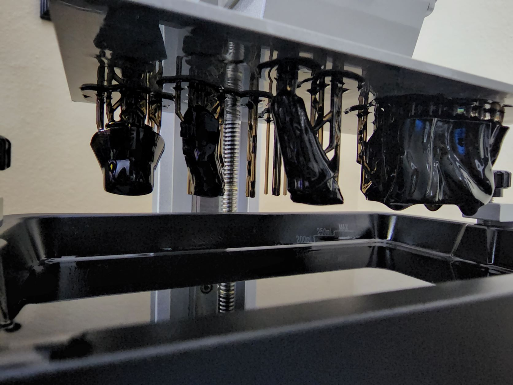

3D printing used to be pricy, my brother told me a story of when they first came out, even a small printer was about $9000. But now days, 3D printers range anywhere from $150 to $3000 dollars. As with most items, the brand, size, and features determine the cost. In my opinion, the best printers are right in the middle of the price range. My first printer cost me $300 and did an amazing job. After a few years I upgraded to a bigger printer once I understood more about what I was doing.

Materials for 3D printing come in many different types, and almost any kind of color you can think of. Material is important, depending on what you want to print and do with the object will determine the type of material you want to get. You can get super hard materials, ones that are more flexible. Here are the two most common materials. PLA – Poly(lactic) acid – This one of the more common materials for the following. Because it has a low melting point, high strength, low thermal expansion, good layer adhesion, and high heat resistance. ABS - Acrylonitrile butadiene styrene - ABS provides favorable mechanical properties such as impact resistance, toughness, and rigidity when compared with other common polymers
